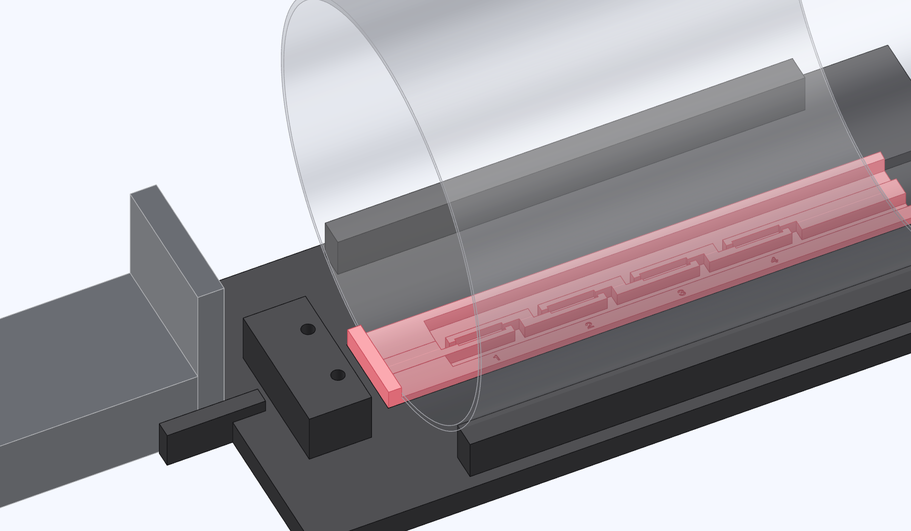

Seat the comb, tube and slide
Set the cradle and slide on the same flat wood or plastic work surface.

- Drop the comb into its pocket with the tab toward the switch pad. Lay the wires in the trough at the far end.
- Lower the bare tube between the keepers with its weld seam up. Slide the rim against the tab.
- Fit the end of the slide opposite the motor between the cradle cheeks. Seat the end plate against the cradle and align the rod with the tube mouth.
Check the seating
The tube rests on the comb without rocking or pinching a wire. The rim touches the tab and the end plate sits squarely between the cheeks.